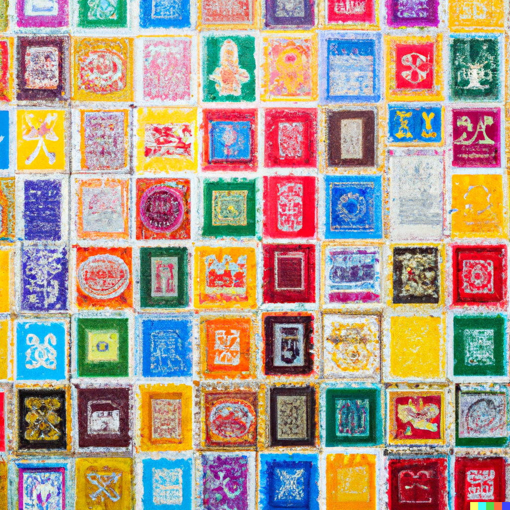
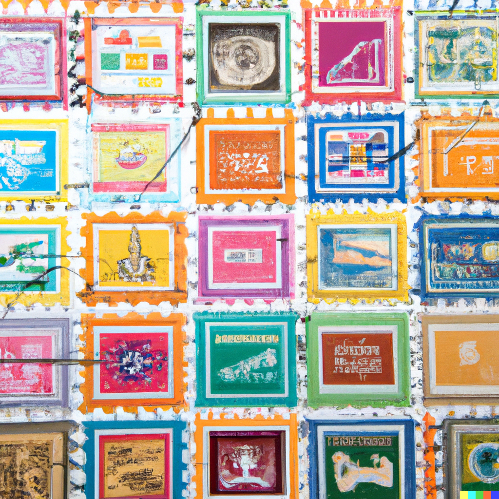
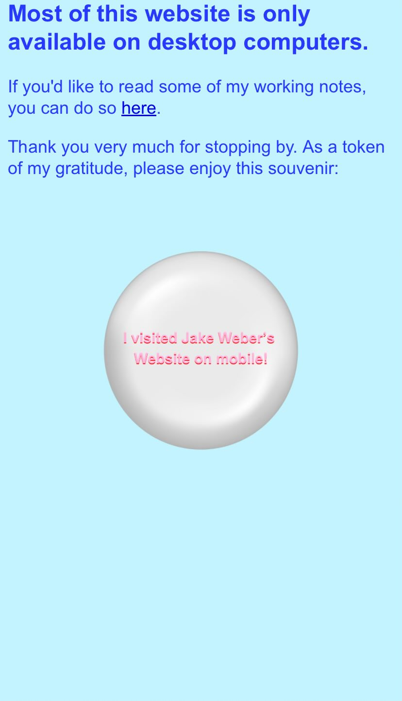

writing
internet passport
artifacts for the web
published on 1.18.23jake weber


The internet is a vibrant ecosystem full of different places to visit. There are personal blogs, websites, profiles, closed gardens, open gardens, little side projects, non-profits, weird experiments, and full on companies.
When you visit a website, all you get as a souveneir is data in your browsing history and cache. Plus the cookies... What if you got something cooler? Something more playful and creative that made you feel more integrated with your online experiences and the digital places you spend time in?
I've thought about this before. To the point where I added a souveneir on my own personal site. If you try to visit my website on a phone, you see this.

I also think there is something people are currently frusterated with with the modern internet. It feels more intangible than it used to. Probably because of two reasons: it's bigger and the winners (of attention) take all now. How many corners of the web go unexplored? This is why projects like Stumble Upon were so fun.
Because of these ideas percolating I thought of the idea of an internet passport. When you visit sites who are part of our digital explorers club, you get a custom stamp. These stamps could be designed by the site owner or even commissioned. Imagine if you landed the official Twitter Stamp gig. All your stamps, representing all the cool spots you've traveled to on the web, would be collected in a simple digital passport. Imagine what Kevin Kelly's stamp would look like. Or Robin Sloans. Or Craig Mods. Or Maggie Appletons. Or Visa's. Or Steve Wozniaks. Every year bloggers and coders alike would unveil their new stamp! You could even have multiple stamps each year, following seasonality or special events in your life. That is the kind of internet I want.
And you wouldn't just collect stamps. You could view other people's stamps too and see their favorite places to visit on the web. I even envisioned a Pokedex style Rasberry Pi device that lets you collect your stamps digitally. You could even grab a stamp straight from the site by holding your device up to it.
I think I might hack on this soon. As an art project, for fun, and I'll make it playful. If you'd like to be part of the first ever batch of digital places to have an Official Internet Passport Stamp... let me know and we can jam! The only requirement is that you have some special corner of the web you call yours.
Collected reading on this topic
comments